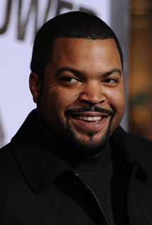

Production
On March 17, 2012, Sony Pictures announced that it was pursuing a sequel to 21 Jump Street, signing a deal that would see Jonah Hill and Michael Bacall return to write a script treatment that would be again developed by Bacall.[17] The film was originally scheduled to be released on June 6, 2014.[18] On May 8, 2013, it was announced that the film would be pushed back a week until June 13, 2014.[19] In June 2013, it was announced the film would be titled 22 Jump Street.[20] In July 2013, Phil Lord and Christopher Miller confirmed they would return to direct the film.[21] On September 6, 2013, Amber Stevens joined the cast of the film.[12] On September 27, 2013, Kurt Russell mentioned that his son Wyatt turned down a role for The Hunger Games sequels to star in 22 Jump Street.[22] Principal photography began on September 28, 2013, in New Orleans, Louisiana, with shots in San Juan, Puerto Rico as well (acting for the shots in the movie as the spring break in "Puerto Mexico") and ended on December 15, 2013.[23][24]
Music
The score for the film was composed by Mark Mothersbaugh and was released by La-La Land Records on a double disc album, limited to 2,000 copies, in September 2014. The second disc of the album also contains the score from the film's predecessor, 21 Jump Street, composed by Mothersbaugh as well.
Sequel and spin-offs
On September 10, 2014, 23 Jump Street was confirmed.[66] Channing Tatum had yet to sign on to the project, stating, "I don't know if that joke works three times, so we'll see."[67] On August 7, 2015, it was revealed that Lord and Miller would not direct the film, but instead write and produce. A first draft of the film's script has been completed.[68] On December 10, 2014, it was revealed that Sony was planning a crossover between Men in Black and Jump Street. The news was leaked after Sony's system was hacked[69] and then confirmed by the directors of the films, Chris Miller and Phil Lord, during an interview about it.[70][6] James Bobin was announced as the director in March 2016.[7][8] The title of the crossover was later revealed as MIB 23, and it was revealed that the crossover would replace a 23 Jump Street film.
Home media
22 Jump Street was released on DVD and Blu-ray on November 18, 2014.
Storyline
After making their way through high school (twice), big changes are in store for officers Schmidt (Jonah Hill) and Jenko (Channing Tatum) when they go deep undercover at a local college. But when Jenko meets a kindred spirit on the football team, and Schmidt infiltrates the bohemian art major scene, they begin to question their partnership. Now they don't have to just crack the case - they have to figure out if they can have a mature relationship. If these two overgrown adolescents can grow from freshmen into real men, college might be the best thing that ever happened to them.
Cast
-
Jonah Hill
-
Channing Tatum
-
Jillian Bell
-

Ice Cube
Box Office
22 Jump Street grossed $191.7 million in North America and $139.4 million in other countries for a worldwide total of $331.3 million, against a budget of $84.5 million.[4][2][27] It outgrossed the first Jump Street film, which made a total of $201.6 million during its theatrical run.[28]
22 Jump Street grossed $5.5 million at its early Thursday night showings.[29] On its opening day it grossed $25 million, including the early Thursday showings.[30] In North America, the film opened at number one in its first weekend, with $57.1 million.n its second weekend, the film dropped to number two, grossing an additional $27.5 million.[32] In its third weekend, the film stayed at number two, grossing $15.8 million.[33] In its fourth weekend, the film dropped to number three, grossing $9.8 million.[34]v
Critical Response
2 Jump Street received generally positive reviews from critics. On Rotten Tomatoes the film has an approval rating of 84% based on 200 reviews with an average rating of 7/10. The site's critical consensus reads, "Boasting even more of the bromantic chemistry between its stars -- and even more of the goofy, good-natured humor that made its predecessor so much fun – 22 Jump Street is the rare sequel that improves upon the original."[35] On Metacritic, the film has a score of 71 out of 100 based on 46 critics, indicating "generally favorable reviews".[36] Audiences polled by CinemaScore gave the film an average grade of "A−" on an A+ to F scale.[37]nkoo Kang of The Wrap gave the film a positive review, saying "If 22 isn't as trim and tight as its predecessor, it's certainly smarter and more heartfelt. Whether this sequel is better than the original is up for debate, but the franchise has definitely grown up."[38] Chris Nashawaty of Entertainment Weekly gave the film a B−, saying "Hill's neurotic-motormouth act and Tatum's lovable-lunkhead shtick still shoot giddy sparks."